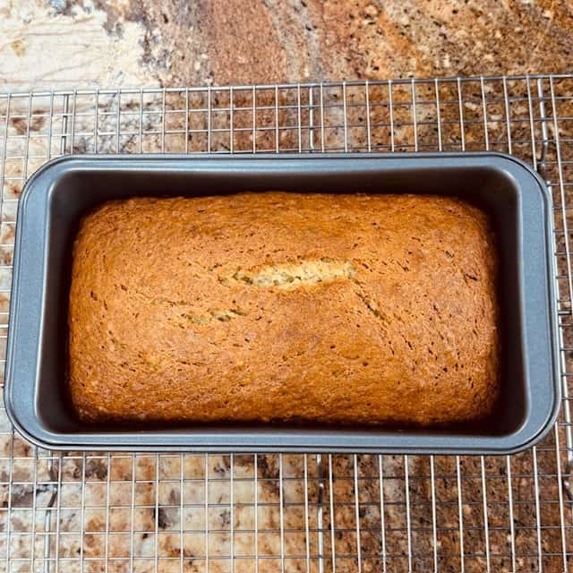
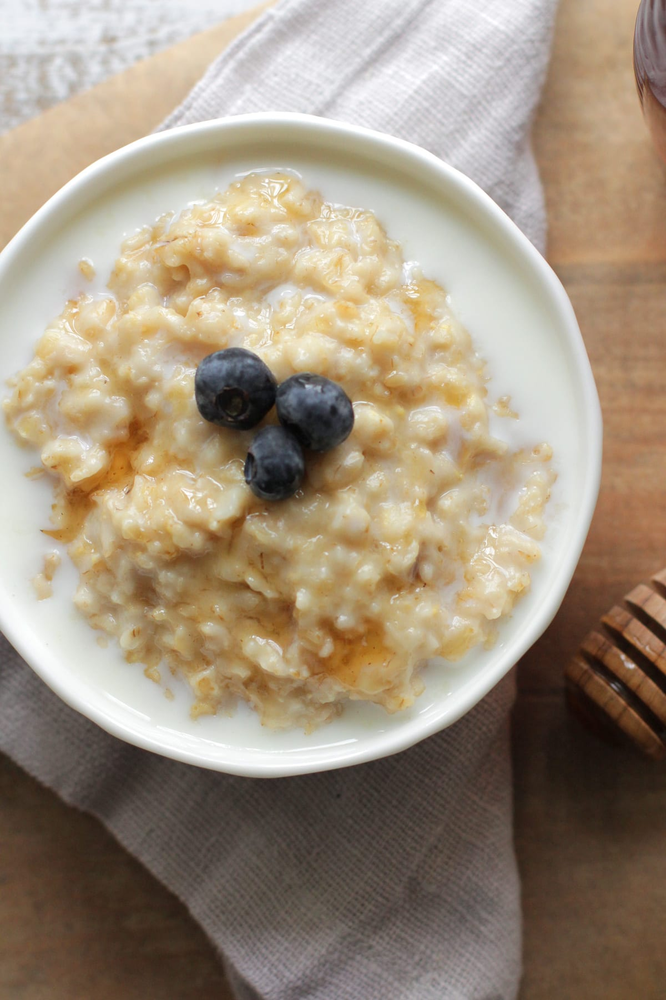

My Favourite Recipes
Banana Bread
Total Time
-10 minutes
Makes
-Roughly 12 Slices
Author
BreadDad

Ingredients
(1) 1 1/2 Cups - Mashed Bananas (RIPE) - 345 grams - This is roughly 3
large bananas but use exactly 1 1/2 cups of mashed ripe bananas for the
best results.
(2) 8 Tablespoons - Unsalted Butter (softened) - 115 grams
(3) 2 - Large Eggs - 114 grams - Not extra large or jumbo eggs.
(4) 1 Cup - White Granulated Sugar - 200 grams - If you want a
slightly “richer” flavor, you can replace the white granulated sugar
with light brown sugar (packed cup). See the tips section below if you
want to use less sugar.
(5) 2 Cups - All Purpose Flour - 240 grams
(6) 1 Teaspoon - Vanilla Extract - 5 milliliters
(7) 1 Teaspoon - Baking Soda - 5 grams
(8) 1 Teaspoon - Baking Powder - 4 gram
(9) 1/2 Teaspoon - Salt - 3 grams
Directions
Preheat oven to 325 degrees F (163 C).
Mash bananas with a fork.
Slice the butter into smaller chunks & then soften the butter in a
microwave. FYI - I like to partially melt the butter for better
mixability. However, do not fully melt the butter (turn it completely
into a liquid). See the tips section below.
Stir bananas, butter, eggs & sugar together in a large mixing bowl.
Mix until fully blended.
Mix in the remaining ingredients. Stir until the batter is fully
mixed.
Pour the finished batter into a nonstick bread pan. Smooth out the
top of the batter within the bread pan.
Bake in the oven for 65 to 70 minutes at 325 degrees F (163 C).
Take out of oven and let the banana bread cool down in the bread pan
for 10 minutes. Use oven mitts. Do not remove the banana bread from the
bread pan during this 10 minute cool down period.
After 10 minutes, remove the banana bread from the bread pan. Place
the banana bread on a cooling rack in order to completely cool. This
cool down may take 1 to 2 hours.
Grill Cheese Sandwich
Total Time
-15 minutes
Makes
-2 servings
Author
Allrecipes

Ingedrients
(1) 4 slices white bread
(2) 3 tbs butter, devided
2 slices cheddar cheese
Directions
Gather all ingredients
Preheat a nonstick skillet over medium heat. Generously butter one
side each bread slice.
Place 1 slice bread, butter-side down, in the hot skillet; top with
1 slice cheese.
Place 1 slice bread, butter-side up, on top cheese.
Cook until lightly browned on one side; flip and continue cooking
until cheese is melted.
Repeat with remaining bread and cheese slices. Serve and enjoy!
SourDough Bread
Total Time
-5 minutes
Makes
-1 serving
Author
Julie Andrews

Ingredients
(1) Oats
(2) Salt
(3) Milk
(4) Optional Sweetener
(5) Optional Flavorings
Directions
Boil the water
Cook the oatmeal
Add the milk
Flavor the oatmeal
Go to Playlists